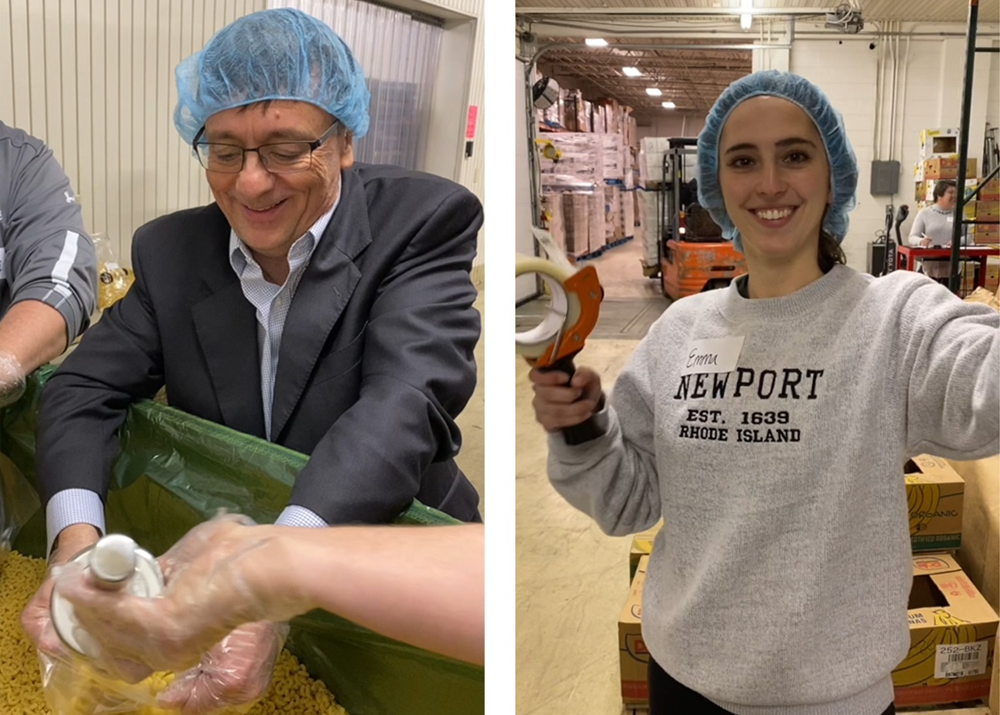

Businesses
Join DeVoted's mission and cause to increase local awareness
about other's needs. The most genuine form of patriotism and loyalty we can show our nation is by taking care of home.
DeVOTEd is a dedicated program to encourage the participation of improving our communities.
The most effective way to make a positive change in our lives is by improving the lives of others and
the enviroment that we all live in. There is so much individuals as well as businesses can do to donate
their time and energy for a cause that hits home and complements our identities as human beings.
Getting started
It's easy! All you have to do is sign up for future events. Create a username and password, and search for local projects.
If you want to volunteer by yourself, perhaps enjoy the solitude of nature. Or volunteer on a team, where you can develop friendships,
and cultivate connections.
Learn more »
Get some coin!
Here at deVOTEd we like the idea of rewarding those will helpful hands. Whenever a volunteer participates in an event, they get to accrue
coin, which is our currency that allows people to make purchases in the marketplace.
Learn more »
View our marketplace!
Our marketplace is a spot to buy sway! Once you accumulate coin you make purchases from our online store, ranging from tedding bears,
to blankets, sweatshirts, etc.
Learn more »
{% endblock %}